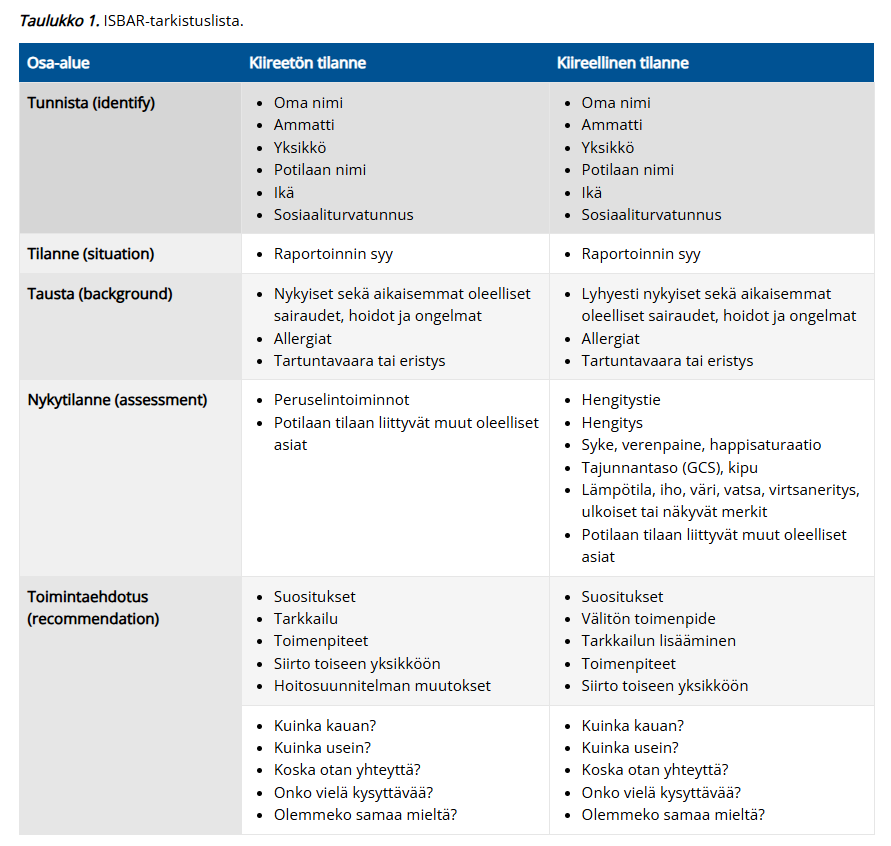

Kappale 5 2023
Taas vaihtoehdot puuttuvat suurimmasta osasta ja kysymyksenasettelua ei aina saatavilla. Näiden suhteen taas olen koittanut kirjoittaa tärkeimmät pointit.
Tässä yhteydessä nyt myös vain ne kysymykset, joita ei ole aikaisemmissa tärpeissä.
5.1 Mikä on verenpainetavoite elvytyksen jälkeen?
Valitse toinen:
- SVP >100
- MAP >50
Solution.
aRiippuen lähteestä on verenpaineen tavoite elvytyksen jälkeen systolinen >100 mmHg tai MAP >65 mmHg

5.2 Opioidien farmakologia
Ei kysymyksenasettelua wikissä, tässä tärkeimmät aiheesta:
Lääkeaineiden luokittelu:
Tärkein tapa luokitella opioidit kliinisesti on niiden vahvuuden mukaan:
- Heikot opioidit = kodeiini ja tramadoli
- Keskivahvat opioidit = tärkein on buprenorfiini
- Vahvat opioidit = tärkeimmät ovat fentanyyli, morfiini ja oksikodoni
Farmakodynamiikka:
Opioidit vaikuttavat kipuhermojen synapsien pre- ja postsynaptiseen puoleen
- Opioidireseptorien (pääasissa myy-opioidireseptori) aktivaatio aiheuttaa presynaptisesti Ca2+-kanavien sulkeutumista ja siten vähentää eksitatoristen neurotransmittereiden vapautumista
- Opioidireseptorien (pääasissa myy-opioidireseptori) aktivaatio aiheuttaa postsynaptisesti K+-kanavien avautumista, mikä johtaa solukalvon hyperpolarisaatioon ja postsynaptisen aktiopotentiaalin inhibitioon
- Samalla tavalla toimivat monet endogeeniset opioidit, jotka säätelevät kipuvastetta selkäytimen takasarvessa.
Farmakokinetiikka:
- Tärkeintä kinetiikasta on tietää heikkojen opioidien metabolia. Kodeiini ja tramadoli ovat molemmat itsessään hyvin huonoja opioideja, mutta ne metaboloituvat CYP2D6:n kautta opioidivaikutuksia välittäviksi metaboliteeiksi (kodeiini morfiiniksi ja tramadoli P-desmetyylitramadoliksi (ODT))
- Jos potilas on CYP2D6:n suhteen hidas metaboloija, on kodeiinin ja tramadolin opioidivaikutus hyvin vähäinen. Taas ultranopeilla metaboloijilla vaikutukset ovat hyvin suuria ja samalla riskit haittavaikutuksille nousevat.
5.3 Elvytyksessä monitorilla näkyy sinusrytmi, mitä teet seuraavaksi?
Ei vaihtoehtoja wikissä, mutta tulisi osata vastata ilman vinkkejä
Solution.
Tunnustele pulssiJos rytmintarkastustauolla havaitset pulssin, joka mahdollisesti voisi kierrätää verta järkevästi, niin tunnustele pulssi. Jos pulssia ei tunnu, niin kyseessä on PEA eli pulseless electrical activity ja se on ei-iskettävä rytmi.

5.4 Alkoholistille pitää antaa:
Valitse yksi
- tiamiini
- glukagoni
- 2 jotain muuta (ei wikissä)
Solution.
aWernicke-Korsakoffin oireyhtymä johtuu tiamiinin (B1-vitamiinin) puutteesta, jonka taustalla on useimmiten alkoholin liikakäyttö
Tiamiinia tulee antaa alkoholivieroituspotilaalla (/tästä epäillylle), vaikka hänellä ei olisikaan Wernicken enkefalopatiaan sopivia oireita. Periaattessa siis annetaan, jos alkoholisti tai tästä epäilty joutuu sairaalahoitoon.
Tärkein asia, joka tulee muistaa tiamiinin antamisesta puutospotilaille on se, että glukoosia tai ravintoa ei saa antaa ennen tiamiinitasojen korjaamista, koska glukoosi ennen tiamiinia pahentaa tilannetta Jos nälkäiset solut saavat glukoosia käytettäväkseen, ne alkavat käyttämään sitä nopeasti, mutta metaboliareitit eivät pysty etenemään jos ei ole tiamiinia -> välimetaboliitteja, kuten pyruvaattia kertyy ja tämä muutetaan maitohapoksi -> asidoosi ja soluvaurio. Tosin akuutissa hypoglykemiassa hypoglykemian nopea korjaaminen on tärkeämpää.5.5 Mikä neste, kun joku aivoturvotusjuttu?
Ei tarkempaa kysymyksenasettelua tai vaihtoehtoja wikissä.
- Mahdollisesti kyseessä ollut dysnatremiapotilaan aivoturvotus.
- Hyponatremia aiheuttaa aivoturvotusta, koska vettä siirtyy osmoottisesti neuroneihin -> aivoturvotus -> oksentelu, voimakas päänsärky, huomattava sekavuus, kouristelu tai tajuttomuus. Oireiden vaikeus kertoo aivoturvotuksen asteesta.
- Jos potilas on merkittävästi oireinen hyponatremian takia, on kyseessä ns. hyponatreeminen hätätilanne ja tällöin potilaalle annetaan 3% NaCl infuusiota 100ml/10min, ja infuusio toistetaan tarvittaessa ad 2x, kunnes P-Na on noussut 5 mmol/l lähtötilanteesta tai vakavat hyponatremian oireet ovat väistyneet.
5.6 Mikä tärkeintä hoitotilanteen johtajana?
Ei vaihtoehtoja, mutta wikissä annettu vastaus: Johtaminen 😀
5.7 Milloin ROSC saavutettu?
Ei vaihtoehtoja, mutta wikissä annettu vastaus: verta kierrättävä rytmi
- ROSC siis tarkoittaa elvytystilanteessa spontaanin verenkierron palautumista (return of spontaneous circulation)
5.8 Mikä on tärkeintä elvytyksessä?
Ei vaihtoehtoja wikissä, mutta tulisi osata vastata ilman vinkkejäkin
Solution.
Varhainen deffaus ja laadukas ppeTärkein yksittäinen elvytettävän potilaan ennustetta parantava tekijä on mahdollisimman varhainen defibrillaatio. Tämän takia esim. jos ollaan hoitolaitoksessa ja defibrillaattori on todella nopeasti saatavilla (laite potilaan vieressä tai jo valmiiksi kiinnitetty) JA potilas on jo monitorivalvonnassa JA havaitaan viiveettä VF tai VT, niin voidaan hälyttää lisäapua jonka jälkeen defibrilloida suoraan ennen painelun aloittamista. Defribillointia voidaan kokeilla kolmesti.
Jos elvytystilanteessa on vain 2 elvyttäjää, pääperiaate on, että ensisijaisesti keskitytään laadukkaaseen painelu-puhalluselvytykseen (PPE) ja varhaiseen defibrillaatioon; suoniyhteyden avaaminen on toissijaista ja tehdään vain, jos se ei heikennä PPE:n laatua.5.9 Mitkä seuraavista ovat anesteetteja?
Valitse:
- fentanyyli
- propofoli
- rokuroni
Solution.
bYleensä, kun puhutaan anesteeteista tai ylesanestesialääkkeistä, niin puhutaan tarkalleen ottaen hypnooteista eli nukutusta aiheuttavista/ylläpitävistä lääkkeistä. Näistä yleisimmin käytetty on propofoli, joka on laskimoanesteetti (yleisimmin käytetty inhalaatioanesteetti taas on sevofluraani).
a: Fentanyyli on analgeetti, joka on yleisimmin käytetty kipulääke yleisanestesiassa.
c: Rokuroni on yleisimmin yleisanestesiassa käytetty lihasrelaksantti.5.10 Mikä ei ole anafylaksian oire?
Ei vaihtoehtoja, mutta annettu vastaus: metallin maku suussa
- Metallin maku suussa on tyypillinen taas mm. puudutemyrkytyksen alkuvaiheelle
Anafylaksian oireista enemmän:
Periaate: Mitä nopeammin oireet alkavat ja etenevät, sitä vaikeampi reaktio on.
Ensioireet:
- Ihon kuumotus, punoitus, pistely tai kutina
- Takykardia
- Täyteläisyyden tunne kurkussa, rinnassa, yskiminen
- Mahdollisesti pahoinvointi, oksentelu
Seuraavat oireet:
- Ihon turvotus (erityisesti silmäluomissa, huulissa), limakalvoturvotus (angioedeema)
- Nokkosihottuma (urtikaria)
- Kurkunpään turvotus, käheys, vinkuva hengitys, yskänpuuskat
- Vatsakipu, pahoinvointi, ripuli, oksentelu
- Verenpaineen lasku, hikoilu, kalpeus
- Vaikeimmissa tapauksissa kurkunpään tukkeutuminen, sokki, hengityksen ja sydämen pysähtyminen
5.11 Elvytystilanne: 2 elvyttäjää, voiko suoniyhteyden avata vai keskitytäänkö laadukkaaseen painelu-puhalluselvytykseen?
Käyty juuri pari kysymystä ylempänä läpi, koita vastata taas
Solution.
Keskity PPE5.12 Mikä seuraavista on keskivahva opioidi?
Ei vaihtoehtoja, mutta mikä on yleisin ja usein ainoana mainittu keskivahva opioidi?
Solution.
BuprenorfiiniOn myös toinen keskivahva opioidi (petidiini), mutta tätä käytetään aika harvoin (käytettiin ennen enemmän synnytyskivussa, mutta nykyään vähän haittavaikutusten takia).

5.13 GCS pisteiden laskeminen potilastapauksesta
Ei esimerkkitapausta, mutta tässä GCS:n laskemisen kertaus:
SiPuLi: Silmät, Puhe, Liike
- Hauskasti kuolleella potilaalla voi olla GCS periaatteessa 6, koska silmät voivat jäädä aukinaiseen tilaan kuolleellakin potilaalla

5.14 Sepsis, mikä ensisijainen vasoaktiivi?
Ei vaihtoehtoja wikissä, mutta tulisi osata vastata ilman vinkkejä
Solution.
Noradrenaliini (NADR)Jos nesteytys ei riitä ylläpitämään verenpainetavoitetta (MAP >65) ja laktaatti on yli 2, niin kyseessä on septinen sokki
Tässä tilanteessa tulee turvautua verenkierron tukilääkitykseen. Ensisijainen lääke on noradrenaliini. Toissijaisena lääkkeenä voidaan käyttää vasopressiiniä tai adrenaliinia. Dopamiini ei sovellu septisen sokin lääkkeeksi, sillä se saattaa lisätä kuolleisuutta.
Noradrenaliinia annostellaan tyypillisesti tasaisena infuusiona infuusiopumpulla omaan linjaansa. Annostelu alueellisen ohjeen mukaan, mutta esim. 70-kiloiselle potilaalle 0,02–0,05 mikrog/kg/min. Yleisimmin käytetyt laimennokset ovat 4–5 mg noradrenaliinia (yksi 4 tai 5 ml:n ampulli) laimennettuna 100 ml:aan NaCl 0,9- tai G5-liuosta (pitoisuudet 0,04 mg/ml ja 0,05 mg/ml). Käyttövalmis liuos 0,08 mg/ml (Noradrenalin Aguettant 0,08 mg/ml). Annos on siis tyypillisesti n. 2-5 ml/t ja annosta suurennetaan vasteen mukaan yleensä erissä 5 ml/t.
Hoitoon lisätään hydrokortisoni 200mg/vrk (50mg x 4) i.v. ellei neste+noradrenaliini riitä MAP-tavoitteeseen
Mikäli verenkierron häiriöön liittyy sydänlihaslama ja sydämen huonontunut pumppaus sekä samanaikaisesti todetut riittämättömän kudosperfuusion merkit (sekoittuneen laskimoveren happikyllästeisyys (SvO2) alle 60–65 %, laktatemia ja metabolinen asidoosi), inotrooppisen lääkityksen aloittaminen on perusteltua, ja dobutamiinia tai levosimendaania voidaan käyttää parantamaan elimistön hapentarjontaa.5.15 Mistä laktaatin nousu johtuu?
Ei vaihtoehtoja wikissä, mutta tässä laktatemiasta tärkeimmtä:
Laktaatti (maitohappo) on anaerobisen glukoosimetabolian lopputuote.
- Normaalioloissa veren laktaattipitoisuus on pieni
Laktaatin pitoisuudet nousevat monissa tilanteissa, mutta niille kaikille yhteistä on anaerobisen glukoosimetabolian lisääntyminen
Aiheuttajia ovat mm. voimakas lihasrasitus, hypoksia (syystä tai toisesta; esim. mikä tahansa sokkitila eli verenkiertovajaus), tietyt metaboliahäiriöt (myös perinnölliset) ja eräät myrkytykset
Yleisin syy laktaatin nousulle on sepsis ja septinen sokki. Septis voi aiheuttaa distributiivisen sokin kautta verenkiertovajauksen ja siten lisätä anaerobista energiantuotantoa periferiassa. Sepsiksessä endogeeninen adrenaliini myös stimuloi soluja lisäämään glykolyysiä ja tämä johtaa pyruvaatin liikatuotantoon, joka konvertoituu laktaatiksi. Vaikka sepsiksessä olisikin riittävä hapentarjonta kudoksessa, niin tämä ylimääräinen pyruvaatti usein muuttuu laktaatiksi, koska systeeminen inflammaatiotilanne voi häiritä mitokondrioiden toimintaa ja siten heikentää pyruvaattimetaboliaa.
5.16 Elvytyksen aikana minimimonitorointi
Ei vaihtoehtoja, mutta käytännössä elvytyksessä vaaditaan vain rytminseuranta defibrillaattorista. Jos kyseessä on hoitoelvytys ja siihen on mahdollisuus, niin minimimonitorointiin kuuluu myös kapnometria.
- Verenpaine, happisaturaatio yms. eivät ole erityisen hyödyllisiä itse elvytyksen aikana, mutta ne ovat tärkeitä elvytyksen jälkeisessä hoidossa.
5.17 Post-op. pahoinvoinnille altistavat tekijät
Tehtävänantona todennäköisesti valita tekijä, joka ei altista PONV:lle.
- Vastauksena ollut: tupakointi ei altista; tämä on todella korkean annin faktoidi tietää eli tupakointi itse asiassa suojaa leikkauksen jälkeiseltä pahoinvoinnilta ja tupakoimattomuus on riskitekijä.

5.18 Mikä on tärkein lääke anafylaksian hoidossa?
Ei vaihtoehtoja, mutta tulisi osata vastata ilman vinkkejä
Solution.
Adrenaliini Anafylaksian hoidossa i.m. adrenaliinia annetaan 0.3-0.5mg annos. Sokkitilanteessa tyypillisesti annostellaan i.v., jolloin annos on 0.05-0.1mg.
Adrenaliinin käytölle ei ole absoluuttisia vasta-aiheita anafylaksiassa; anafylaksian hoito on prioriteetti nro 1.5.19 ISBAR, mitä S-kirjain tarkoittaa
Ei vaihtoehtoja, mutta tulisi osata vastata ilman vinkkejä
Solution.
Situation ISBAR on raportointimenetelmä, jota voidaan käyttää sairaalaympäristössä ja sen ulkopuolella infromaation järjestämiseen selkeään ja suppeaan muotoon, mikä mahdollistaa ohdonmukaisen kommunikaation.
I = Identify, S = Situation, B = Background, A = Assessment, R = Recommendation
5.20 CYP2D6-entsyymin aktiivisuuden vaikutus kodeiinin analgeettiseen vaikutukseen
Käyty jo useaan otteeseen läpi aikaisemmin. Tulisi olla helppoa vastata kysymykseen: “Kummalla kodeiini aiheuttaa suuremman vaikutuksen: CYP2D6:n suhteen hitailla vai nopeilla metaboloijilla?”
Solution.
Nopeilla metaboloijilla Kodeiini on aihiolääke, joka metaboloidaan maksassa CYP2D6:n toimesta morfiiniksi, joka välittää opioidivaikutuksen. Tämän vuoksi kodeiinin vasteet vaihtelevat huomattavasti yksilöiden välillä perimän ja CYP2D6:ta estävien muiden samanaikaisten lääkkeiden takia.
Arvioiden mukaan CYP2D6:n suhteen hitaita metaboloijia on noin 7% valkoihoisista ja ultranopeita metaboloijia n. 3.6-6.5% (afrikkalaistaustaisista jopa 29%).5.21 Raskaana olevan anestesia
Ei tarkempaa kysymyksenasettelua tai vaihtoehtoja wikissä, tässä tärkeimmät aiheesta:
Kaikki tavanomaiset anestesialääkkeet, puudutteet ja paikallisesti käytettävät lääkeaineet soveltuvat raskaana olevan anestesiaan ja nukutus on pääsääntöisesti turvallista.
- Kipulääkkeista leikkauksen jälkeen parasetamoli on suositeltavin, NSAIDeja voidaan käyttää lyhytaikaisesti, mutta niiden käyttöä vältetään loppuraskaudesta valtimotiehyen (ductus arteriosus) sulkeutumisen vuoksi. Opioidit eivät ole vasta-aiheisia, mutta niitä käytetään pienintä tehokasta annosta mahdollisimman lyhyen aikaa (samoin kuten muillakin).
Raskaana olevalle tehdään vain välttämättömiä toimenpiteitä; elektiiviset tyypillisesti lykätään raskauden jälkeisiksi
- Jos raskauden aikana on pakko leikata potilas, niin turvallisin ajankohta on embryogeneesin jälkeinen aika eli myöhäinen ensimmäinen raskauskolmannes ja toinen raskauskolmannes (aspiraatioriski koholla myöhäisessä raskaudessa).
- Sikiön kannalta on huomattava, ettei millään anestesiassa käytettävällä lääkkeellä ole todettu teratogeenisia vaikutuksia
Leikkauksessa tulee aina olla valmius kiireelliseen tai hätäsektioon äidin tai sikiön voinnin äkillisesti romahtaessa
Monitorointi eroaa hieman ja KTG-rekisteröinti (kardiotokografia) tehdään aina ennen toimenpidettä ja toimenpiteen jälkeen. Rekisteröinti voi olla tarpeen koko toimenpiteen ajan, ja se tehdään tarvittaessa myös heräämöhoidon aikana.
- Sikiön sykekäyrä on yleisanestesian aikana monotoninen ja normaali sykevaihtelu puuttuu. Seuranta vaatii kätilön saliin
- Kardiotokografia sisältää sekä sikiön sykekäyrän että kohdun supistelun seurannan
Yleisanestesian sijaan puudutukset ovat suositeltavimpia, jos ne ovat mahdollisia leikkaus ja potilaskohtaiset muuttujat huomioiden. Puudutuksia suositaan myös jälkikivun hoidossa
5.22 Mikä näistä liittyy akuutista kudosvauriosta johtuvaan kipuun
Ei vaihtoehtoja, mutta vastaus annettu: nosiseptio
- Nosiseptio tarkoittaa neurologista prosessia, jossa kipureseptorit aktivoituvat ja lähettävät signaaleja kipuärsykkeestä aivoihin.
- Nosiseptiolla on potentiaalia johtaa kipuun, mutta ei aina johda siihen; kipu on kokemus, joka voi kyllä johtua nosiseptiosta, mutta voi myös syntyä ilman sitä.
- Nosiseptio ei siis tarkoita kipua; Kipu ja nosiseptio ovat eri ilmiöitä. Kipua ei voida päätellä pelkästään aistineuronien aktiivisuudesta.
5.23 Mikä näistä ei ole opioidien sivuvaikutus
Valitse yksi:
- ummetus
- euforia
- hengityslama
- joku neljäs (ei wikissä)
Solution.
d